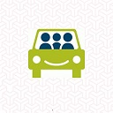

div class="allcontain">
Give us a call: +0232 --- ---
"; echo $_SESSION['user_name']; echo ""; }?>
Toggle navigaion

HOME
CONTACT
Cauta o cursa
Ofera o cursa
Profilul meu
Autocomplete search
All
Establishments
Addresses
Geocodes
Strict Bounds